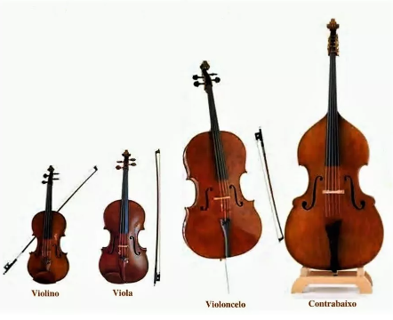
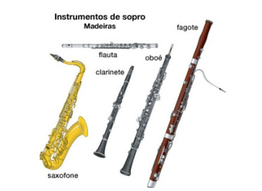
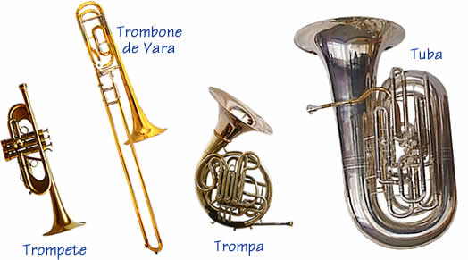
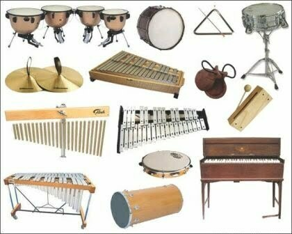

Quais as familias dos instrumentos musicais?
Os Instrumentos Musicais são organizados em Grupos, que são conhecidos como Famílias. As principais famílias de instrumentos são:
Cordas, Madeiras, Metais e Percussão;
Cada família tem suas características, nas Cordas, os músicos produzem o som ao passarem um arco por cordas, ou mesmo ao dedilharem as mesmas.
Já nas Madeiras e Metais, os sons são produzidos pelo sopro dos músicos.
Por fim, dos instrumentos de Percussão os músicos obtém o som ao percutirem ou agitá-los
Familia das cordas
Cordas friccionadas através de um arco que tange as cordas, o som é produzido. O arco é feito de madeira (vara de madeira que prende as crinas) e de crina de cavalo. O instrumentista segura pela parte de madeira e fricciona a crina nas cordas.
Esta família é formada por: violinos, violas, violoncelos, violões, guitarras, contrabaixos, cavaquinhos, entre outros. O piano e o cravo apesar de serem instrumentos de teclas, também se encaixam na família das cordas, pois cada tecla aciona um mecanismos que é ligado a uma corda, e é essa corda dentro do piano ou cravo que emite o som. 
Figura 1: Instrumentos de cordas
Esses instrumentos são tocados com os dedos ou com uma palheta. Exemplos: Harpa, violão, cavaquinho, entre outros. As cordas do piano são vibradas por intermédio de martelos que são acionadas quando os dedos do pianista tocam as teclas.
Familia das madeiras
O ar penetra nesses instrumentos através do sopro humano: a coluna de ar é posta em vibração por um instrumentista que assopra.
Os instrumentos da família das madeiras são: flautas, flautins ou piccolos, oboés, clarinetes, clarones, saxofones e fagotes. 
Figura 2: Instrumentos de madeiras
Apesar do nome, nem todos esses instrumentos são feitos de madeira. O que define sua classificação é o modo como é produzida a vibração do som nos instrumentos, nesse caso, soprando uma palheta flexível no bocal e pelo sistema de chaves.
Familia dos metais
Estes instrumentos são constituídos principalmente por duas matérias-primas: latão e bronze. No entanto, com a evolução das técnicas construtivas e da engenharia de materiais, atualmente também são utilizadas outras composições de ligas metálicas.
O ar penetra nesses instrumentos através do sopro humano: a coluna de ar é posta em vibração por um instrumentista que assopra.
Os instrumentos da família das madeiras são: trompa, trompete, trombone e tuba. 
Figura 3: Instrumentos de metais
Em termos de formato, todos os instrumentos dos metais tem um bocal em uma das extremidades, onde a boca do músico fica apoiada para assoprar o ar e vibrar os lábios. Já na outra extremidade fica a campânula, por onde o ar sai junto ao som. Além dessas duas características, o formato e o tamanho dos instrumentos varia bastante, o que acaba definindo as diferentes sonoridades de cada um.
Familia das percussões
Os instrumentos de percussão são aqueles que necessitam ser percutidos (batidos), agitados, raspados ou friccionados para que produzam os sons.
A família da percussão é bem grande, é formada por: tímpanos, tambor, bumbo, caixa, xilofone, triângulo, pratos e carrilhão, pandeiro, atabaque, timba, bateria, entre outros. 
Figura 4: Instrumentos de percussão
Os instrumentos de percussão geralmente são usados para dar ritmo à música.